Nie mogłam wstać. Leżałam między workami ziemi, a moje stawy krzyczały: „DOŚĆ”.
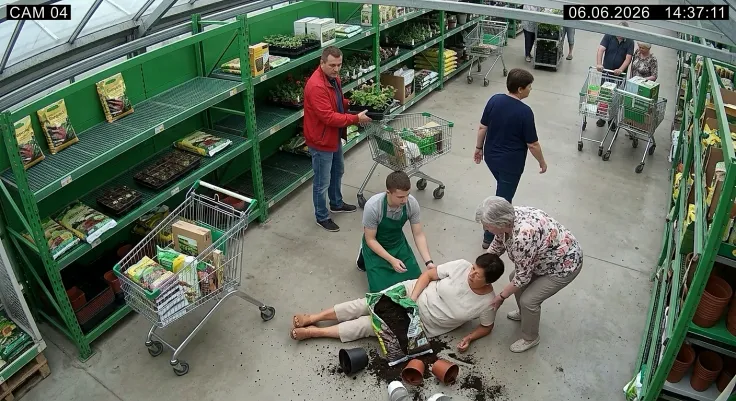
Jeszcze rok temu całe lato spędzała na działce i przy wnukach. Po tym zdarzeniu ledwo wschodziła po schodach. Aż pewnego wieczoru spróbowała czegoś, co wydawało się zbyt proste, by mogło zadziałać…
Zweryfikowane przez Ewę Zawadzką
Redaktor prowadząca, dział Zdrowie
Krystyna ma to nagranie. Trzydzieści jeden sekund z kamery przy dziale z ziemią. „Czasem je sobie odtwarzam, sama nie wiem po co” — mówi nam dziś, już z uśmiechem. Pozwoliła nam opisać swoją historię, bo — jak twierdzi — „gdyby ktoś opowiedział mi ją dwa lata temu, oszczędziłabym sobie całego tego cierpienia”. Oddajmy jej głos.
Na nagraniu widać mnie, jak zdejmuję z półki worek ziemi i odwracam się, żeby położyć go do wózka. Przez ułamek sekundy wszystko wygląda normalnie. Potem worek mnie przeważa, kolana po prostu nie wytrzymały i ugięły się pode mną — jakby ktoś wyłączył prąd — i osuwam się na posadzkę razem z workiem, w chmurze ciemnej ziemi.
Mam 62 lata. Był najgorętszy dzień tamtego maja, a ja pojechałam po sadzonki i ziemię, bo nie chciałam stracić kolejnego lata zamkniętego na balkonie, patrząc, jak działka zarasta.
Młody chłopak z obsługi przybiegł pierwszy. „Proszę pani, wszystko w porządku?” Kiwałam głową, że tak. Ale nie mogłam sama wstać. I w tej jednej chwili — na podłodze przyprószonej ziemią, przed gapiącym się sklepem — dotarło do mnie coś, co spychałam w bok od dwóch lat: to nie była kwestia chwilowego osłabienia. Moje nogi zawodziły mnie od dawna. Tylko nigdy wcześniej nie zrobiły tego tak publicznie.
Te skurcze i ból ignorowałam dwa lata. Teraz wiem, że to było ostrzeżenie.
Z mężem Jurkiem zbudowaliśmy sobie spokojne, dobre życie. Trzydzieści osiem lat małżeństwa. Córka, syn, wnuki. I działka — całe moje życie. Sadzonki pomidorów, poranne podlewanie, kawa w altanie, gdy słońce schodzi niżej. Tak wyglądały moje letnie dni, odkąd pamiętam.
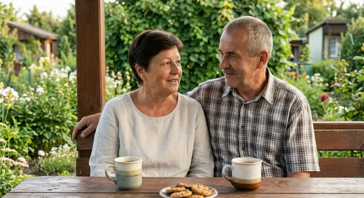
A potem, jakieś dwa lata temu, zaczęło się od drobiazgu. Nogi pod wieczór robiły się ciężkie, jakby ktoś dolał mi ołowiu do łydek. Kostki puchły, szczególnie w upały — wieczorem ledwo wchodziły w sandały. Kolana sztywniały tak, że po dłuższym siedzeniu pierwsze kroki stawiałam ostrożnie, jak po cienkim lodzie. Najgorsze były gorące dni: im wyższa temperatura, tym bardziej spuchnięte, zmęczone i obce wydawały mi się własne nogi.
Myślałam, że lato powinno pomagać. Było odwrotnie.
Więc zaczęłam kombinować. Na działkę „jeszcze nie dziś, jak mi przejdzie”. Spacer nad zalewem skracałam o połowę i siadałam na ławce, gdy Jurek chciał iść dalej. Latem, gdy wnuk Antek przyjechał na tydzień, on biegł przodem do wody, a ja zostawałam z tyłu i udawałam, że chcę popatrzeć na kaczki. To są te drobne rezygnacje, o których nikt głośno nie mówi.
Tamtego dnia w markecie kostki miałam spuchnięte już od rana — upał lał się z nieba od świtu. Miałam nie jechać ale pomyślałam, że jeśli odpuszczę i dziś, to lato znów przejdzie mi koło nosa. Zmusiłam się. I moje ciało wybrało dokładnie ten moment, żeby powiedzieć „dość”.
Wieczorem, gdy Jurek przyniósł mi herbatę, zobaczyłam, że ogląda coś na telefonie. To było nagranie z monitoringu. Obejrzał je kilka razy. W końcu odłożył telefon i powiedział cicho: „Krysiu, my się dłużej nie możemy oszukiwać, że to normalne.”
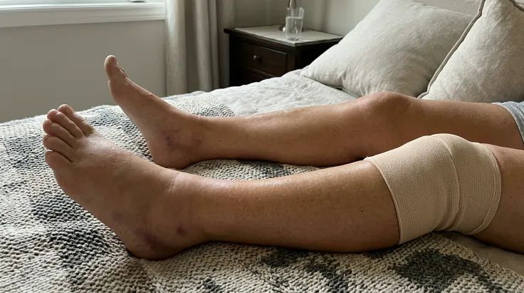
Zdanie, dzięki któremu w końcu zrozumiała
Tydzień później Jurek zawiózł mnie do pani Magdy, specjalistki, którą poleciła sąsiadka. Spodziewałam się kolejnej rozmowy o „wieku” i o tym, żebym więcej odpoczywała. Zamiast tego sprawdziła mi równowagę, ucisk w różnych miejscach, dopytała, kiedy nogi puchną najbardziej i kiedy sztywność jest najgorsza. A potem usiadła naprzeciwko i wytłumaczyła mi to tak, że pierwszy raz od dawna coś mi zaskoczyło.
„Pani nogi nie tyle się »starzeją«. One wpadły w błędne koło. Dyskomfort i sztywność, jaką Pani czuje, po latach osiadły bardzo głęboko — a w upalne dni szczególnie się uaktywniają. Mniej ruchu usztywnia mięśnie, a im bardziej są napięte, tym bardziej może Pani odczuć to podczas każdego kroku. Ciepło sprzyja obrzękom i uczuciu ciężkości.”
Siedziałam i mrugałam. W jednym zdaniu opisała całe moje ostatnie lato. To już nie był tylko dyskomfort — ja zaczęłam żyć wokół strachu. Strachu przed wstaniem, przed spacerem, przed schyleniem się nad grządką.
A potem dodała coś, czego wcześniej nikt mi nie powiedział.
„Większość rzeczy, po które sięgają ludzie, działa głównie na samej powierzchni skóry — a to, co naprawdę dokucza, czyli uczucie ciężkich, napiętych, zmęczonych nóg i stawów, siedzi głębiej.”
Siedziałam tam jak otępiała. Przez dwa lata wydałam na to drobną fortunę — a sporo z tego działało zupełnie nie tam, gdzie trzeba. To tak, jakby próbować ugasić pożar w piwnicy, wlewając wodę przez okno na poddaszu.
Próbowałam niemal wszystkiego
Nie powiem, że wszystko inne było bez sensu. Ale patrząc wstecz — większość rzeczy po prostu nigdy nie docierała tam, gdzie powinna.
Tabletki na wieczór pomagały zasnąć, ale rano chodziłam jak we mgle — a w środku lata, gdy chciałam coś zrobić w ogrodzie z rana, zanim zrobi się za gorąco, naprawdę nie mogłam sobie pozwolić na pół dnia w półśnie. Chłodzące spraye dawały chwilową ulgę, ale po 20 minutach efekt znikał i ciężkość w nogach wracała. Próbowałam zimnych okładów, woreczków z mrożonym groszkiem pod kostki, wkładek, wałeczków do masażu — mam tego w domu całą szufladę.
To nie były oszustwa. Po prostu nie sięgały tam, gdzie pani Magda pokazywała palcem. Byłam już prawie pogodzona z tym, że zostanę tą babcią, która lato ogląda z ławki zamiast aktywnie spędzać go z rodziną. Ale Jurek nie chciał tego zaakceptować.
9 nocy szukania przy kuchennym stole
Jurek jest uparty. Pewnie dlatego trzymamy się razem od trzydziestu ośmiu lat. Przez dziewięć nocy z rzędu siedział przy kuchennym stole w okularach na nosie, z laptopem otwartym długo po północy — fora, składy preparatów, strona za stroną o tym, jak radzić sobie z ciężkimi, opuchniętymi nogami i bolącymi stawami kiedy problem siedzi głębiej. Nie szukał cudu. Powtarzał: „Szukam czegoś, co pozwoli Ci stanąć na nogi.”
Przestał patrzeć na zwykłe maści i zaczął szukać czegoś zrobionego tak, żeby jednocześnie działało głęboko, regenerowało i wspierało krążenie. Dziewiątego wieczoru natknął się w komentarzach na wpis emerytowanej specjalistki od fizjoterapii. Pisała o żelu na bazie wyciągów roślinnych, który łączy regeneracyjne składniki z tymi, które pomagają na uczucie ciężkich i zmęczonych nóg.
Ten preparat nazywał się Flexihotin Forte.
Jurek odwrócił do mnie laptopa, jakby znalazł skarb. „Przeczytaj.” Przewróciłam oczami. „Znowu jakiś żel? Przerobiłam ich z 20.”. „To nie jest kolejny żel” — upierał się. „Przeczytaj, jak działa.”
Więc przeczytałam. Dwa razy. I pierwszy raz od dawna coś wydało mi się po prostu logiczne. „No dobrze. Spróbuję.”
Już pierwszy wieczór był inny
Tego samego wieczoru odkręciłam słoiczek bez większej wiary. Wmasowałam odrobinę w uda, łydki i kostki — te spuchnięte po całym upalnym dniu.
Rozeszło się przyjemne uczucie świeżości, nie lodowate szczypanie, raczej jak orzeźwienie spływające po nogach. Usiadłam i czekałam na to znajome „brzęczenie” ciężkości, które zawsze wracało wieczorem.
Tej nocy kostki nie były tak nabrzmiałe jak zwykle po gorącym dniu. A rano — i to zaskoczyło mnie najbardziej — wstałam od łóżka bez tego ostrożnego „rozchodzenia się” pierwszych kroków, które od dwóch lat było moim porannym rytuałem.
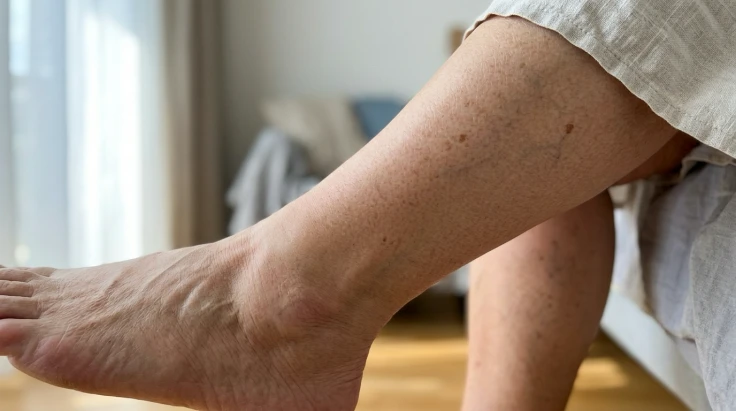
Nie ogłaszałam zwycięstwa. Za wiele razy już się sparzyłam. Ale pierwszy raz od dawna pomyślałam: „może tym razem to naprawdę coś innego”. I chciałam zrozumieć, dlaczego — bo jeśli coś mi pomaga, wolę wiedzieć, jak. Następnym razem zabrałam słoiczek ze sobą do pani Magdy.
Moje 30 dni — prawie jak pamiętnik.
Niczego wielkiego się nie spodziewałam — za dużo razy się już sparzyłam. Ale Jurek ciągle powtarzał: dwa tygodnie, dwa razy dziennie, bez „zapomniałam”.
Po 1. tygodniu. Rano wstawałam od stołu po śniadaniu bez tego ostrożnego „rozchodzenia się” pierwszych kroków. Wykorzystywałam chłodniejsze godziny w ogrodzie, zanim słońce przygrzało na dobre — i pierwszy raz od dawna nie liczyłam minut do momentu, aż będę mogła usiąść.
Po 2 tygodniach. Przeszłam całą promenadę nad zalewem i ani razu nie wypatrywałam wcześniej ławek, na których usiądę. Jurek szedł obok i w pewnym momencie po prostu zamilkł — później przyznał, że dawno nie widział, żebym szła tak swobodnie.
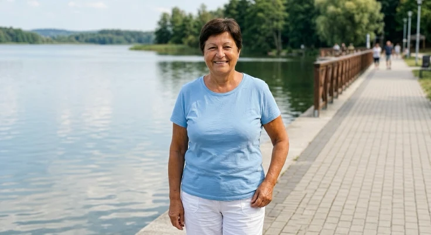
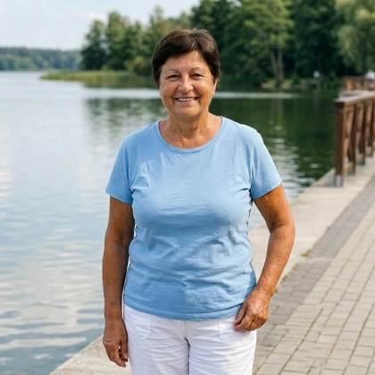
Po 3 tygodniach. Uklękłam przy grządce i pół godziny plewiłam, zanim sama się podniosłam — bez podpierania się o altanę, bez proszenia o pomoc. Usiadłam potem na schodku i po cichu się rozpłakałam. Jurek oczywiście to zauważył.
Dziś. Przyjechał Antek. Stanął na dole pod schodkami działki i wyciągnął do mnie ręce. Nie wahałam się. Schyliłam się, wzięłam go na ręce i stałam tak, czując pewny grunt pod nogami. Jurek zrobił nam zdjęcie. To pierwsza od lat fotografia, na której uśmiech sięga mi aż do oczu.
Dlaczego Flexihotin Forte działa inaczej niż typowe maści i żele? I dlaczego ma to sens?
Kiedy po miesiącu wróciłam do specjalistki na kontrolę, w końcu zrozumiałam, dlaczego to zadziałało. Niczego mi nie obiecywała — przypomniała, że każdy reaguje inaczej i że podstawą są rozsądne nawyki. Ale powiedziała, że takie podejście ma dla niej sens w codziennej pielęgnacji, bo celuje dokładnie w ten „głęboki” problem, o którym mi wcześniej mówiła.
W skrócie: kiedy nogi i stawy są obolałe i zmęczone od lat, nie chodzi o jeden nagły epizod. Ten głęboki dyskomfort każe się oszczędzać, od mniejszego ruchu mięśnie napinają się jeszcze bardziej, a im bardziej spięte nogi, tym bardziej boisz się każdego kroku. Flexihotin Forte pomógł mi przerwać to błędne koło — prostym rytuałem, który dało się uczciwie utrzymać rano i wieczorem.
Działa stopniowo, w trzech fazach, w miarę jak wmasowujesz żel w skórę:
Faza 1 — Wyciszenie. Gdy zaczynasz rozprowadzać żel, mentol, mięta pieprzowa i kamfora dają od razu czyste uczucie świeżości, które wycisza te pierwsze sygnały „przeciążenia” — dokładnie w momencie, w którym wcześniej automatycznie szykowałam się na ciężkość i ból.
Faza 2 — Odciążenie. Żel wchłania się bez tłustej warstwy i uwalnia wyciągi z arniki górskiej, bluszczu, nostrzyka żółtego i pięciornika — składniki tradycyjnie stosowane przy uczuciu ciężkich, opuchniętych i zmęczonych nóg oraz przy wsparciu mikrokrążenia.
Faza 3 — Wsparcie i regeneracja. Po wchłonięciu zostają składniki, które wspierają regenerację zmęczonych stawów i mięśni oraz utrzymują uczucie świeżości na długie godziny: kora dębu (kojące rozluźnienie zmęczonych stawów), żywokost i szałwia (wsparcie regeneracji tkanek po wysiłku) oraz wyciąg z dzikiej róży, bogaty w witaminę C.
Nie jeden „cudowny” smar. Tylko rytuał, który dało się uczciwie powtarzać rano i wieczorem — także w upał.
Prawdziwi ludzie, prawdziwe historie.
Kiedy opowiedziałam swoją historię, zaczęli się odzywać inni — i wcale nie tylko z opuchniętymi nogami jak ja.
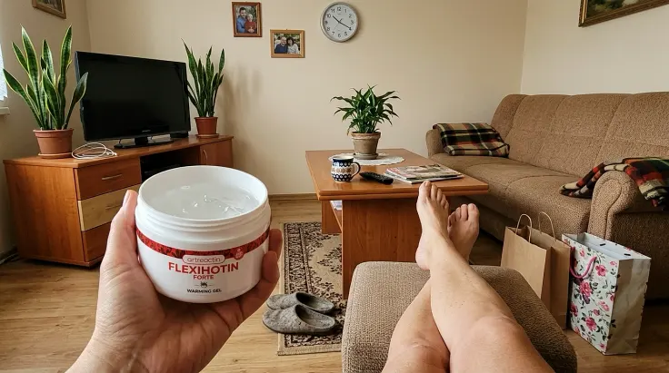
„Doszłam z zakupami do domu i nie musiałam siadać po drodze”
„Wcześniej spod sklepu do domu robiłam sobie dwa przystanki na ławce, bo kostki puchły i ciążyły. Wcieram żel rano i wieczorem. Po dwóch tygodniach pierwszy raz przeszłam całą drogę z siatkami bez ani jednego postoju. Lekkość w nogach naprawdę wróciła.”
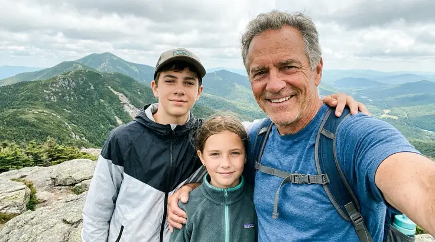
„Myślałem, że przesiedzę urlop — a wszedłem z wnukami na szczyt”
„W upały kostki puchły mi tak, że wieczorem ledwo wchodziłem w buty. Już myślałem, że cały urlop w górach przesiedzę na tarasie. Stosuję żel rano i wieczorem po długim dniu na nogach — to naprawdę przynosi ulgę. W tym roku wszedłem z wnukami całą trasą na szczyt i ani razu nie musiałem zawracać.”
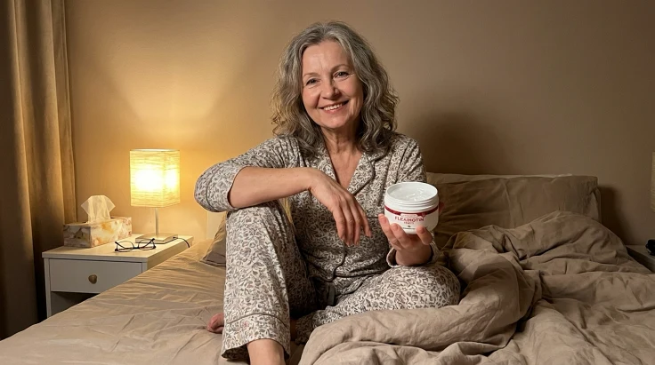
„Pierwszy raz od lat po prostu wstaję rano”
„Najbardziej dokuczały mi poranki — pierwsze kroki po wstaniu jak po szkle. Siadałam na brzegu łóżka i zbierałam się w sobie. Teraz po prostu wstaję. Wieczorny rytuał z żelem stał się dla mnie chwilą dla siebie, a rano nogi są zauważalnie lżejsze.”
Długotrwały, bezpieczny i łatwy w użyciu.
To, co przekonało mnie najbardziej, to że Flexihotin Forte po prostu wpasował się w dzień — bez ceregieli i bez „a może mi zaszkodzi”.
Długotrwały. Na początku ulga utrzymywała się przez kilka godzin po wmasowaniu. Z czasem sięgałam po żel coraz rzadziej — aż w końcu mogłam go odstawić niemal całkowicie.
Bezpieczny. Żel na bazie aż 25 starannie dobranych ekstraktów roślinnych, do codziennej pielęgnacji.
Łatwy w użyciu. Wmasuj odrobinę w łydki, kostki i okolice stawów. Szybko się wchłania, nie zostawia tłustego śladu — można od razu wyjść w sandałach.
Dla kogo: dla osób, którym po dniu na nogach doskwiera uczucie ciężkości, napięcia i zmęczenia w łydkach, kostkach i stawach — i które latem nie chcą sięgać po grzejące preparaty, tylko po ulgę, lekkość i wsparcie regeneracji zmęczonych stawów.
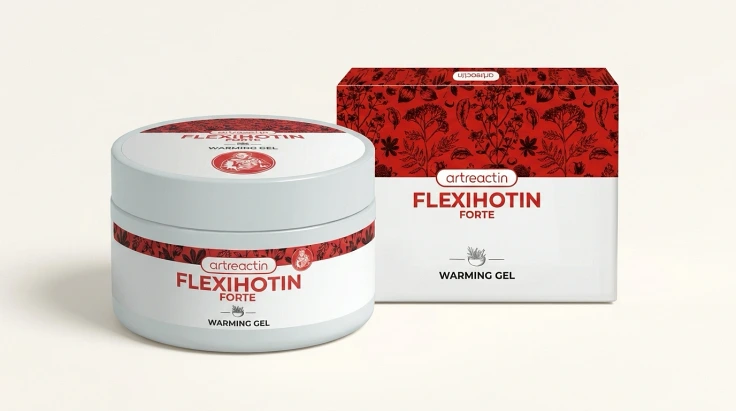
-97%Jedna rzecz, zanim klikniesz.
Każda partia powstaje w mniejszych, starannie przygotowywanych seriach, więc dostępność potrafi się różnić między cyklami produkcyjnymi.
Nie piszę tego, żeby Cię popędzać. Piszę, bo sama czekałam — dwa lata strachu przed wstaniem, dwa lata siadania na ławce, bo bałam się iść dalej. Nie czekaj tyle, co ja. Nie pozwól, żeby Twoje nogi odmówiły Ci w najgorszym możliwym momencie — na schodach, w sklepie, gdy trzymasz za rękę kogoś, kogo kochasz.
Ostatnie słowa Jurka.
Wczoraj wieczorem, po kolacji, znów poszliśmy nad wodę — jak kiedyś. Szłam kawałek przed Jurkiem, a on zawołał za mną:
„Zapomniałem już, jak to jest po prostu patrzeć, jak idziesz. Cieszę się, że moja żona wróciła.”
To właśnie dał nam Flexihotin Forte. Nie młodość. Nie perfekcję. Zwykłe uczucie i pewność, że mogę stać, iść i znów żyć we własnym ciele.
Jeśli Tobie też ciężkie, zmęczone nogi i bolące stawy zabierają poranki, sen albo spacery — przetestuj Flexihotin Forte. Nic nie ryzykujesz.
Skąd wziąć Flexihotin Forte?
Rozpoczęto dystrybucję ziołowej formuły Flexihotin Forte — na razie w 13 krajach europejskich, w tym w Polsce. W ramach specjalnej akcji dla naszych czytelników możesz odebrać jedno opakowanie formuły za symboliczne 5 zł.
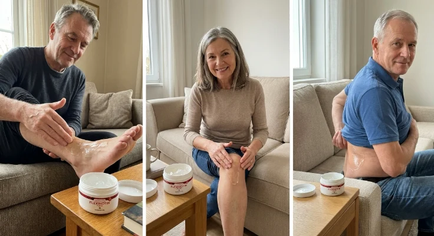
Dlaczego tak tanio?
To akcja testowa — producent chce zebrać opinie od jak największej liczby osób. Po zakończeniu promocji cena powróci do regularnej wysokości 167 zł.
Akcja prowadzona jest regionami i etapami (decyduje kolejność zgłoszeń) — każde województwo ma swoją turę. Gdy tura w danym regionie się kończy, zapisy zostają zamknięte do odwołania.
Kliknij, aby przejść do formularza zamówienia.